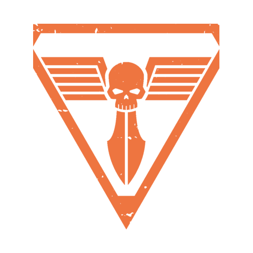
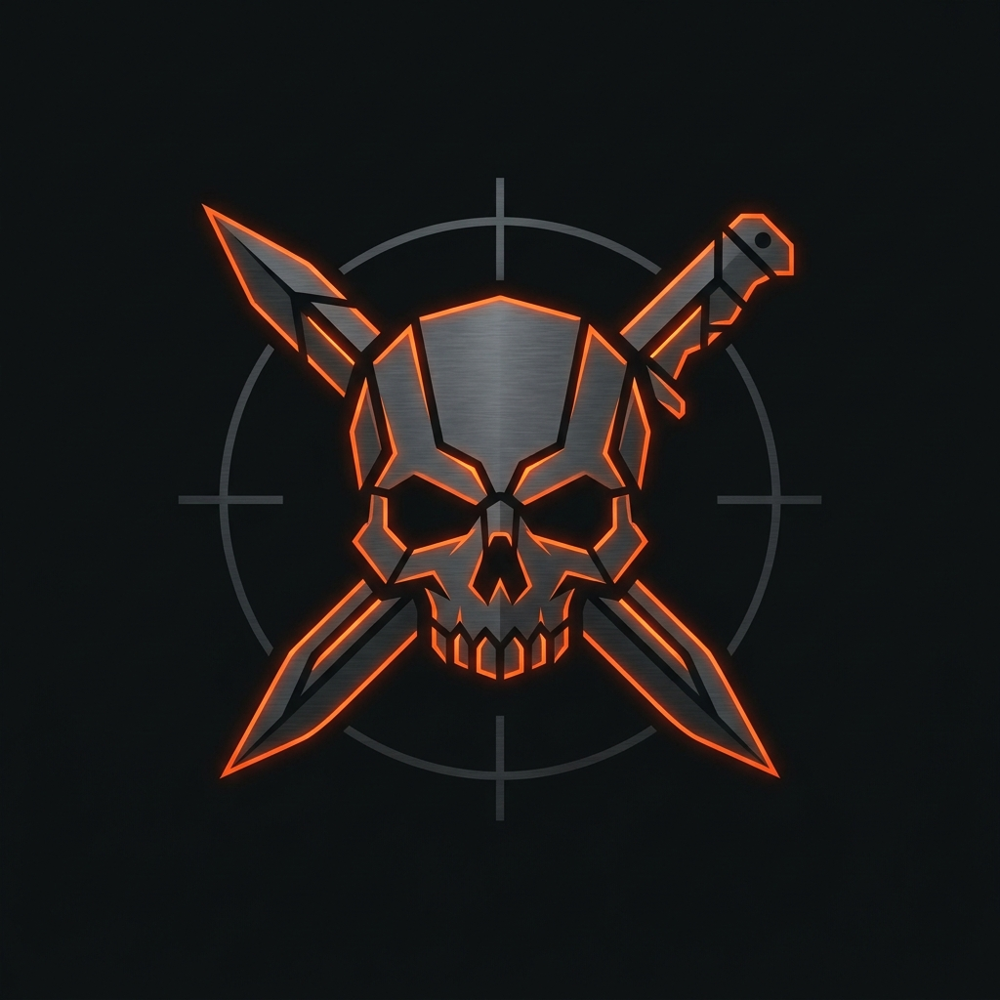

方案一 · KT24 战术竞技场 — 平板横屏桌面全景指挥台 (1280×800 三栏同屏零跳转架构)

死亡天使 (ANGELS OF DEATH) ★先手
主要行动：关键行动 (+50%) · 击杀等级 2
4 CP
5 VP
TP 1
TP 2 · 交战阶段
TP 3
TP 4
认证行动 2025 · 任务：传输情报 · 撤回栈：18 步可回溯
4 VP
2 CP
瘟疫战士 (PLAGUE MARINES)
主要行动：已加密隐藏 · 击杀等级 1
▲ A方特遣队 · 在场 6/6
信仰点数: 3
淘汰者狙击手
●射击中
3 APL · 6" · 3+ · [+神射手]
12/12
星际战士连长
3 APL · 6" · 3+ · [铁光环]
15/15
重装机枪手
▲受创
3 APL · 4"▼ · 3+
5/18
仲裁者军士 [待机]
3 APL · 6" · 3+
13/15
LIVE FIREFIGHT RESOLUTION // 远程交火
淘汰者狙击手 ⟫ 死神狙击步枪 (4A · 2+ · 3/3 · 致命2 / 穿刺1 / 严重)
生效修饰：[制高点 ≥2" → 精准 1] · [普通掩护预留 1] · [神射手 → 严重]

攻击方骰盘 (ATTACK POOL)
1 暴击 · 2 普通
6
★致命2
4
◆精准
3
已抵挡
1
失败
点选单枚骰子可触发武器重投 / 指挥重掷 (-1CP)
伤害关口结算
−5 HP
致命2 (立即) + 3 普通伤
⚡ 应用伤害并继续
+ 伤害关口微调
防御方骰盘 (DEFENCE 3−1=2)
1 普通成功
4
◆掩护抵挡
2
失败
✓ 已自动推荐最优抵挡：掩护成功抵挡普通3
战局结构化时间线 (TP2)
[射击] 淘汰者狙击手 → 瘟疫冠军：触发致命 2
-2 HP
[重投] 瘟疫冠军 指挥重掷 防御骰 1 → 2
↶ 已撤回
[行动] 淘汰者狙击手 执行「隐匿射击」(1 AP)
剩余 1AP
[计谋] 死亡天使 使用「神射手」(0 CP · 连长光环)
0 CP
ⓘ 武器规则原文 · 致命 X (Devastating X)
PDF 第 111 页
每当你保留一个暴击成功时，该武器立即对目标造成 X 点伤害。此伤害不可以在防御步骤被防御骰抵挡。
▼ B方特遣队 · 在场 5/6
腐化计数器: 2
瘟疫战士冠军
◎受击目标
3 APL · 5" · 3+ · [恶心韧性]
10/15
瘟疫术士
3 APL · 5" · 3+ · [腐烂诅咒]
14/14
瘟疫掷弹兵
3 APL · 5" · 3+ · [枯萎手雷]
14/14
瘟疫斗士
☠ 已残废
已计入 A方 击杀等级 +1
0/14